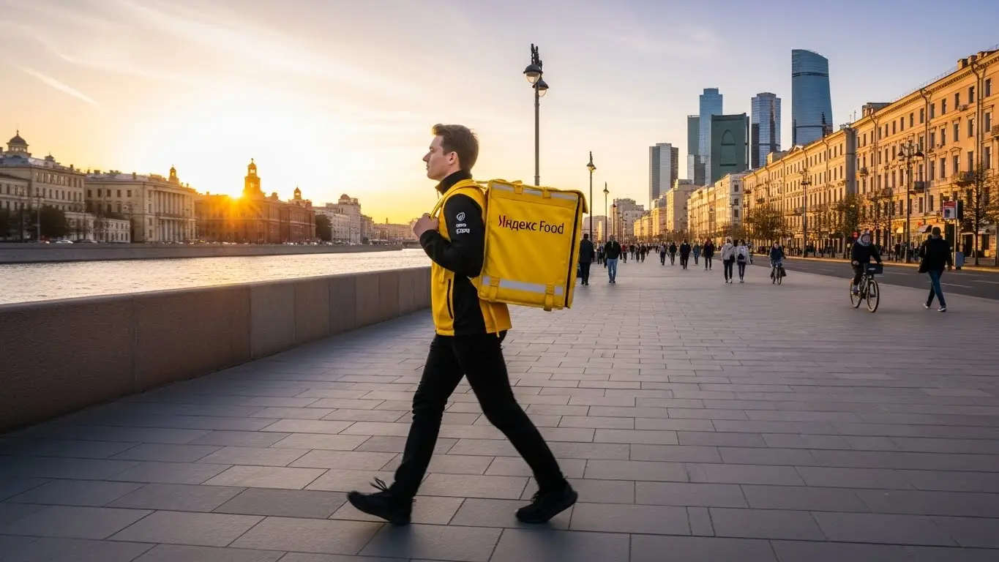
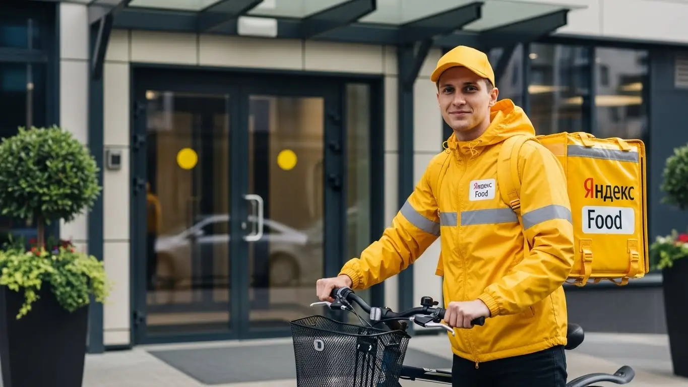

Сколько зарабатывает курьер Яндекс Еды в Долгопрудном 2025-2026

- Работа курьером Яндекс Еды в Долгопрудном: для кого эта вакансия и что вы получите
- Сколько вы будете зарабатывать курьером в Долгопрудном: калькулятор дохода и разбор выплат
- Реальный заработок курьера в Долгопрудном: смены и месячный доход
- График работы и форматы занятости
- Требования к кандидату и документы
- Самозанятость, налоги и юридическая чистота
- Пошаговое оформление и первый выход на линию в Долгопрудном
- Пешком, на вело или на авто: что выгоднее в Долгопрудном
- Районы, маршруты и «топовые» зоны заказов в Долгопрудном
- Безопасность, страховка, штрафы и оплата простоя
- Плюсы и возможные минусы работы курьером в Долгопрудном
- Реальные истории и отзывы курьеров из Долгопрудного
- Ответы на главные вопросы о работе курьером Яндекс Еды в Долгопрудном
- Короткие ответы на главные вопросы
- Итоги и ваш следующий шаг
Все города
Думаешь, работа курьером Яндекс Еда в Долгопрудном — это легкие деньги на свободном графике? Боишься убить свой велик на наших дорогах, стоять в вечных пробках на Лихачевском шоссе или получать копейки после вычета всех расходов? Правильно делаешь, что сомневаешься. Забудь рекламные обещания про «доход до 100 000». Я расскажу, как обстоят дела на самом деле, здесь, в нашем городе.
Поверь, 9 из 10 новичков в Долгопе сливаются в первый же месяц. Почему? Потому что никто не объясняет им «внутрянку». Они не считают реальные расходы на бензин или ремонт, не понимают, как работает приоритет, и почему в «Новых Водниках» заказов густо, а в старом центре — пусто. Чтобы избежать этих ошибок, стоит изучить все условия заранее — актуальная информация и анкета для желающих начать собраны на странице работа курьером Яндекс Еда в Долгопрудном. В итоге — разочарование и пустой кошелек. А ведь этих ошибок можно было избежать, зная специфику города.
В этом разборе я без воды разложу по полочкам всё, что касается работы курьером Яндекс Еды именно в Долгопрудном. Мы честно посчитаем, сколько можно заработать пешком, на велике и на авто. Я покажу, в каких районах и в какое время самые «жирные» заказы, а куда лучше не соваться. Разберем, как погода и студенты из Физтеха влияют на твой доход, и как не нарваться на штрафы, которые съедят всю прибыль.
Меня зовут Алексей. Я сам начинал с желтого рюкзака, а сейчас у меня свой небольшой таксопарк-партнер. Я видел эту кухню со всех сторон и знаю каждый перекресток в Долгопрудном. Так что пристегивайся (или готовь педали), сейчас будет честный разговор без рекламной шелухи. Никаких «золотых гор», только реальный опыт и цифры. Давай по порядку.
Чтобы ты не запутался во всей этой инфе, я накидал короткий план, о чём пойдёт речь.
Что ты точно узнаешь из этого разбора
В этой статье ты ТОЧНО узнаешь:
- Сколько реально можно заработать в Долгопрудном за смену пешком, на велике и на авто, и как погода влияет на доход?
- В каких районах Долгопрудного — от Новых Водников до центра — самые «жирные» заказы, а куда лучше не соваться?
- Что выгоднее выбрать в Долгопрудном: быструю доставку на велосипеде в спальниках или дальние заказы на авто по всему городу?
- Как за 10 минут оформить самозанятость, сколько платить налогов и за что реально могут оштрафовать или понизить рейтинг?
- Как правильно планировать слоты в «Яндекс Про», чтобы не сидеть без заказов и получать гарантированную оплату за простой?
А если тебе некогда читать всю статью — переходи сразу к заключению, где ты найдёшь короткие ответы на все эти вопросы и указания, в каких разделах искать подробности.
А вот тебе главные цифры по Долгопрудному в одной картинке, чтобы сразу было понятно, о каких деньгах говорим.
Работа курьером в Долгопрудном: ключевые цифры
Доход в час
350-500 ₽
В часы пик и с бонусами за спрос
За смену (8 часов)
2800-4000 ₽
Зависит от района, погоды и дня недели
Популярный формат
Велокурьер
Оптимальное сочетание скорости и расходов
Заказы с чаевыми
~30%
В среднем каждый третий клиент оставляет чаевые
Работа курьером Яндекс Еды в Долгопрудном: для кого эта вакансия и что вы получите
Давай по-честному разберёмся, кому работа курьером в Долгопрудном реально зайдёт, а кому лучше и не начинать. Это не офис с девяти до шести, тут свои правила. Если ты ищешь стабильности в виде оклада — это не сюда. Но если тебе нужна свобода, быстрые деньги и возможность самому выстраивать свой график — тогда читай дальше.
Эта вакансия — отличный вариант для самых разных людей. Студентам из Физтеха или других местных колледжей — идеальная подработка после пар. Тем, кто ищет дополнительный доход к основной зарплате, — это возможность не сидеть без денег. Водителям, у которых простаивает личный автомобиль, — способ превратить его в актив. Главное — желание двигаться и зарабатывать, а специальный опыт не требуется, всему научат.
Кому подойдёт эта работа в Долгопрудном
Работа курьером — это как конструктор: ты сам собираешь свой график и доход. Поэтому она подходит многим. Во-первых, студентам. Можно выходить на 3–4 часа вечером после учёбы и спокойно зарабатывать себе на жизнь, не прося у родителей. Во-вторых, тем, кто ищет подработку к основной зарплате. Например, работаешь 2/2 — в свои выходные можешь смело выходить на линию и получать живые деньги.
Также это хороший старт для тех, у кого нет опыта работы. Здесь не нужно резюме на пять страниц и три собеседования. Заполнил анкету, прошёл короткое онлайн-обучение — и вперёд. И конечно, это для тех, кому деньги нужны здесь и сейчас. Благодаря ежедневным выплатам не придётся ждать зарплаты целый месяц. Если ты ценишь гибкость, не боишься физической активности и хочешь видеть результат своего труда сразу на карте — эта вакансия для тебя.
Главные преимущества для жителей районов Центральный, Новые Водники, Старый город
Одно из главных удобств работы курьером в Долгопрудном — возможность выполнять заказы прямо у себя под окнами. Тебе не нужно тратить час-полтора на дорогу до «офиса». Живёшь в Центральном районе — вышел из подъезда и сразу на линии, рядом много кафе и ресторанов. Обитаешь в Новых Водниках — там полно заказов из магазинов и новостроек, где люди активно пользуются доставкой.
То же самое касается и жителей Старого города или района Хлебниково. Везде есть свои «хлебные» места. Это огромная экономия времени и денег на проезд. Ты работаешь на знакомых улицах, знаешь все короткие пути и дворы, что помогает доставлять заказы быстрее и, соответственно, больше зарабатывать. Не нужно мотаться через весь город по пробкам — выбрал свой район и работаешь в комфортном для себя радиусе.
Краткое обещание по доходу и условиям
Теперь о главном — о деньгах. Сколько реально можно заработать курьером в Долгопрудном? Если говорить о подработке по 3–4 часа в день, можно рассчитывать на 1500–2500 рублей за смену. При полной занятости, работая по 8–10 часов, активные курьеры, особенно на авто, делают и по 4000–5000 рублей. В месяц при полной занятости вполне реально выходить на доход в 70 000 – 90 000 рублей и даже больше, если работать в пиковые часы и выходные.
Ключевые условия работы просты и прозрачны. Во-первых, свободный график — ты сам выбираешь слоты в приложении «Яндекс Про». Во-вторых, ежедневные выплаты на карту — для этого нужно оформить статус самозанятого, что делается онлайн за 15 минут. Это позволяет получать заработок легально и сразу. В-третьих, начать можно без опыта — всему научат в процессе короткого онлайн-инструктажа. Никаких сложных схем, всё честно: больше работаешь — больше получаешь.
Вот тебе живой пример. У меня в парке есть парень, студент МФТИ. Живёт в кампусе. Он выходит на велосипеде на 3-4 часа по вечерам, доставляет заказы в основном по Центральному району и вокруг института. За неделю у него набегает 10-12 тысяч рублей чистыми. Ему хватает и на развлечения, и чтобы родителей не нагружать. Он просто выбрал удобный для себя район и график, и это работает.
В общем, работа курьером Яндекс Еды в Долгопрудном — это гибкий и доступный способ заработка. Она идеально подходит тем, кто не хочет сидеть на месте и ценит свободу. Главный совет новичку: начни работать в своём районе, где знаешь каждую тропинку. Так ты быстрее втянешься и начнёшь стабильно зарабатывать.
Сколько вы будете зарабатывать курьером в Долгопрудном: калькулятор дохода и разбор выплат
Теперь давай к самому интересному — деньгам. Многие думают, что это просто плата за заказ, но всё гораздо сложнее. Доход курьера — это сумма нескольких составляющих, и если понимать, как каждая из них работает, можно зарабатывать значительно больше. Система в «Яндекс Про» построена так, чтобы мотивировать курьера работать эффективно, и она же его подстраховывает.
Важно понимать, что нет фиксированной ставки в час. Твой доход напрямую зависит от количества выполненных заказов, расстояния, спроса в конкретном районе и времени суток. Поэтому один курьер может за 8 часов заработать 2500 рублей, а другой — 5000. Вся разница в том, как они планируют свою смену и используют возможности, которые даёт сервис.
Из чего складывается доход курьера
Твой итоговый заработок за смену складывается из нескольких частей. Во-первых, это базовая оплата за каждый выполненный заказ. Во-вторых, доплата за расстояние — чем дальше везти, тем больше денег ты получишь. В-третьих, и это очень важно, — повышающие коэффициенты. В часы пик (обед, ужин), в плохую погоду или в районах с высоким спросом стоимость заказов умножается на коэффициент. На карте в приложении «Яндекс Про» такие зоны подсвечиваются — именно там самые выгодные заказы.
Кроме этого, есть бонусы за выполнение определённого количества заказов в день или неделю. Также не забывай про чаевые — их клиенты оставляют по желанию, и они полностью твои. И два ключевых момента, которые отличают сервис: оплата простоя (если ты приехал в ресторан, а заказ ещё не готов, время ожидания компенсируется) и возможная компенсация проезда на общественном транспорте, если маршрут длинный.
Как пользоваться калькулятором дохода
Чтобы прикинуть примерный заработок, воспользуйся калькулятором на этой странице. Пользоваться им просто. Сначала выбери свой тип доставки: пеший курьер, велокурьер или курьер на автомобиле. У каждого типа свой потенциал по скорости и дальности, поэтому и доход будет разный.
Затем укажи, сколько часов в день и сколько дней в неделю ты планируешь работать. Можешь посчитать вариант для подработки на 4 часа в день 3 дня в неделю или для полной занятости на 8 часов 5 дней в неделю. Калькулятор покажет тебе примерный диапазон твоего дневного и месячного дохода в Долгопрудном. Это не точная цифра до копейки, но она даёт хорошее представление о том, на что можно рассчитывать.
Прикинь свой доход курьером в Долгопрудном
8 часов
5 дней
Примерный доход в месяц:
В месяц: ~160 часов
Это примерный расчёт на основе средней ставки 425 ₽/час в Долгопрудном. Реальный доход зависит от спроса, бонусов и вашего графика.
Этот калькулятор даёт хорошее представление о возможном доходе. А если хочешь посмотреть детальные условия и сразу подать заявку, то вся актуальная информация собрана на странице работа курьером Яндекс Еда в твоём городе. Там же найдёшь ответы на другие вопросы и сможешь заполнить анкету.
Примеры расчёта для пешего, вело- и авто‑курьера в Долгопрудном
Давай на конкретных примерах, чтобы было понятнее.
- Пеший курьер. Допустим, ты работаешь 4 часа вечером в центре Долгопрудного, где много заказов на короткие расстояния. За это время ты успеваешь сделать 6–8 доставок. Средний чек за заказ с учётом небольшого расстояния и бонусов — 250–300 рублей. Итог за смену: около 1500–2400 рублей.
- Велокурьер. Ты работаешь 8 часов и катаешься между спальными районами, например, из Новых Водников в Старый город. На велосипеде ты быстрее, поэтому делаешь 15–20 заказов за день. Расстояния больше, значит, и оплата за них выше. Плюс ловишь пиковые коэффициенты. Твой дневной заработок может составить 3000–4000 рублей.
- Курьер на своем авто. Ты работаешь на машине 8-часовую смену. Можешь брать дальние заказы по всему городу и даже в ближайшие посёлки вдоль Дмитровского шоссе. Особенно выгодно работать в дождь или снег, когда коэффициенты максимальные. За день можно сделать 20–25 заказов и заработать 4500–6000 рублей (уже за вычетом бензина).
У меня был случай с одним водителем-курьером. В субботу лил сильный дождь, и спрос на доставку в Долгопрудном взлетел до небес. Коэффициенты в приложении были х2.5-х3. Он вышел на линию на 10 часов, работал в основном по крупным жилым комплексам. За счёт повышенного спроса и больших чаевых от благодарных клиентов, которые не хотели выходить из дома, он за день сделал почти 8000 рублей. Это яркий пример того, как погода и правильный выбор зоны влияют на доход.
Итак, твой заработок — это не случайность, а результат твоего подхода. Он состоит из множества частей: от оплаты за заказ до бонусов и чаевых. Чтобы зарабатывать больше, не просто бери все заказы подряд. Мой совет: следи за картой спроса в «Яндекс Про», выбирай зоны с высокими коэффициентами и используй транспорт, который лучше всего подходит для конкретного района и погоды.
Реальный заработок курьера в Долгопрудном: смены и месячный доход
Диапазон дохода для подработки и полной занятости
Окей, с теорией разобрались. А что на практике? Сколько реально можно заработать, работая курьером в Долгопрудном? Итоговый доход зависит от трёх вещей: способа доставки (пешком, на велосипеде или на авто), количества часов на линии и твоего подхода к делу. Если нужна подработка на 2–4 часа в день, например, после учёбы, то пеший курьер или велокурьер в сервисах вроде Яндекс Еды спокойно делает 1000–1800 рублей за смену. Курьер на автомобиле за то же время заберёт больше, около 1500–2500 рублей, так как сможет выполнять более дорогие и дальние заказы.
При полной занятости, когда ты на линии по 8–10 часов, цифры совсем другие. Пеший или велокурьер в Долгопрудном при стабильной работе 5 дней в неделю может рассчитывать на 60 000 – 90 000 рублей в месяц. Это не потолок, а вполне реальная зарплата. Курьер на своем авто зарабатывает больше: его месячный доход может доходить до 120 000 – 150 000 рублей и выше, особенно если он берёт заказы из магазинов через Яндекс Доставку. Важно понимать, что это «грязный» доход, из которого нужно вычесть расходы на топливо и налог для самозанятых.
Как район, время суток и погода влияют на доход
Твой заработок — это не просто ставка за час. Он постоянно меняется, и умный курьер этим пользуется. Главные множители твоего дохода — это пиковые часы, погода и район. В Долгопрудном самый жир — это вечерние часы будней (с 18:00 до 21:00) и почти весь день в выходные. В это время люди массово заказывают еду, и в приложении «Яндекс Про» карта города окрашивается в фиолетовый цвет — это зоны с повышенным коэффициентом. Оплата за заказ, который днём стоит 150 рублей, вечером может вырасти до 300–350 рублей.
Отдельная история — погода. Как только начинается дождь, снегопад или сильная жара, большинство курьеров предпочитают сидеть дома. А вот заказов становится в разы больше. Спрос резко превышает предложение, и коэффициенты взлетают до небес. В такие дни можно за 3–4 часа заработать как за целый обычный день. Плюс, в плохую погоду клиенты чаще оставляют хорошие чаевые — просто из благодарности, что ты доставил их заказ, пока они сидели в тепле и уюте.
Советы по увеличению заработка от опытных курьеров
Чтобы не просто работать, а именно зарабатывать, нужно подходить к делу с головой. Во-первых, всегда смотри на карту спроса в «Яндекс Про» перед выходом на линию. Не стоит начинать смену в тихом спальнике, лучше сразу ехать туда, где есть «фиолетовые зоны». В Долгопрудном это часто районы новостроек вроде «Новых Водников» или центральные улицы с большим скоплением кафе, например, проспект Пацаева и Лихачёвское шоссе.
Во-вторых, планируй свои смены. Если у тебя есть выбор, бери плановые слоты на вечернее время и выходные — так ты гарантированно попадёшь на пик спроса. Не бойся плохой погоды, а используй её как возможность сорвать куш. И ещё совет: если есть возможность, сочетай разные типы доставки. Например, в хорошую погоду можно быстро развозить заказы на велосипеде в пределах одного района, а в дождь или для доставки тяжёлых заказов из гипермаркетов использовать автомобиль. Гибкость — твой главный козырь.
Вот реальный пример. Студент МФТИ начинал как пеший курьер: работал по 4 часа после пар и получал 1200–1500 рублей. Затем он купил недорогой велосипед и стал брать вечерние слоты с 19:00 до 23:00 в районе «Центральный». Его средний доход за те же 4 часа вырос до 2000–2500 рублей. А когда пошёл первый осенний ливень, он вышел на линию и за три часа сделал почти 4000 рублей, потому что коэффициент был х3.
Сравнение дохода в Долгопрудном по форматам занятости
| Формат | Пеший / Велокурьер | Автокурьер |
|---|---|---|
| Подработка (2-4 часа/день) | 1000 – 1800 ₽/смена | 1500 – 2500 ₽/смена |
| Полная занятость (8-10 часов/день) | 3000 – 5000 ₽/смена | 4500 – 7000+ ₽/смена |
| Месячный доход (полная занятость) | 60 000 – 90 000 ₽ | 90 000 – 150 000 ₽ |
В общем, заработок курьера — это не фиксированная ставка, а результат твоих действий. Можно просто кататься и получать средние деньги, а можно анализировать спрос, погоду и время, чтобы зарабатывать значительно больше. Мой совет: в первый месяц попробуй разные условия работы — выходи в разное время и в разных районах, чтобы понять, где и когда в Долгопрудном больше всего заказов.
График работы и форматы занятости
Подработка после учёбы или основной работы
Свободный график — главное преимущество этой работы. Ты сам решаешь, когда и сколько работать, без начальников и обязательных смен с 9 до 6. Это идеальный вариант для тех, кто ищет подработку, чтобы совмещать с учёбой или основной деятельностью.
Вот пара реальных сценариев. Студент, живущий рядом с МФТИ, выходит на линию после пар, примерно в 17:00, и работает до 21:00. За эти 4 часа в будний день он успевает выполнить 10–15 заказов и заработать около 2000 рублей. В субботу он берёт длинный слот на 8 часов и делает ещё 4000–5000. В итоге за неделю набегает 12–15 тысяч — отличные деньги для студента, особенно с учётом ежедневных выплат. Другой пример — менеджер, который работает в офисе 5/2. Ему нужны деньги на ипотеку, поэтому он выходит на авто в пятницу вечером и на весь день в воскресенье. Он специализируется на доставке продуктов из гипермаркетов — это тяжёлые, но дорогие заказы. За выходные он дополнительно зарабатывает 10–12 тысяч к своей основной зарплате.
Полная занятость: как выглядит типичный день курьера
Если ты рассматриваешь курьерскую доставку как основную работу, твой день будет строиться вокруг пиков спроса. Типичный график опытного курьера в Долгопрудном выглядит так: выход на линию около 11:00, чтобы захватить первые обеденные заказы из ресторанов. С 12:00 до 15:00 — самый активный период, заказы идут один за другим. В это время лучше находиться в районах, где много офисов или учебных заведений.
После 15:00 спрос падает, и это хорошее время для перерыва. Можно пообедать, отдохнуть, заправить машину. Примерно с 17:30–18:00 начинается вечерний пик, который длится до 21:00–22:00. В это время заказы идут из жилых районов — люди возвращаются с работы и заказывают ужин через Яндекс Еду. Опытные курьеры к этому времени перемещаются в густонаселённые кварталы, например, в «Центральный» или «Новые Водники». Такой рваный график позволяет не выматываться и при этом забирать самые выгодные заказы, зарабатывая максимум.
Как планировать слоты и выходы через приложение «Яндекс Про»
Вся твоя работа управляется через приложение «Яндекс Про». Там ты не только видишь заказы, но и планируешь свой график. Есть два основных режима: свободный выход и плановые слоты. Свободный выход — это когда ты можешь в любой момент нажать кнопку «На линию» и начать работать. Это удобно, но в часы низкого спроса можно просидеть без заказов.
Плановые слоты — это когда ты заранее бронируешь время и район, в котором будешь работать, например, с 18:00 до 22:00 в районе «Центральный». Плюс таких слотов в том, что сервис гарантирует тебе минимальный доход, даже если заказов будет мало. Кроме того, за выполнение плановых слотов твой рейтинг активности растёт. А высокий рейтинг даёт приоритет в распределении заказов и доступ к бронированию самых выгодных слотов. Поэтому важно не опаздывать на забронированные смены и не отменять их в последний момент — это бьёт по рейтингу и, соответственно, по твоему доходу в будущем.
Вот ещё один случай. Новичок на авто первые две недели выходил на линию хаотично, когда было свободное время. Он зарабатывал по 2-3 тысячи в день и жаловался на простои. После совета попробовать плановые слоты он начал за неделю вперёд бронировать вечерние 4-часовые смены в зонах с высоким спросом. В итоге его средний дневной заработок вырос до 4500-5000 рублей, потому что он перестал тратить время на ожидание и всегда был в центре событий.
Итак, главный вывод по графику: используй гибкость себе во благо. Если это подработка — выходи в пиковые часы. Если основная работа — строй свой день вокруг волн спроса. И обязательно освой планирование слотов в «Яндекс Про» — это прямой путь к стабильному и высокому доходу.
Требования к кандидату и документы
Многих новичков пугает этот раздел: мол, сейчас начнутся требования как при приёме в космонавты. На деле всё гораздо проще. Если ты адекватный человек и готов работать, то с вероятностью 99% подходишь. Главное — заранее подготовить небольшой пакет документов, чтобы не бегать в последний момент.
Возраст, гражданство и базовые условия
Начнём с основ. Чтобы стать курьером Яндекс Еды, нужно соответствовать нескольким простым условиям. Во-первых, это возраст. Стандартно на работу берут с 18 лет — с этого возраста доступны все форматы: пеший курьер, вело- и автокурьер. Но есть хорошая новость для молодых и активных: стать пешим курьером или велокурьером можно уже с 16 лет. Для этого понадобится письменное согласие родителей или опекунов, а работать придётся по нормам ТК РФ для несовершеннолетних — то есть сокращённый рабочий день и без ночных смен.
Во-вторых, гражданство. Сервис работает с гражданами Российской Федерации, а также стран Евразийского экономического союза (ЕАЭС): Армении, Беларуси, Казахстана и Кыргызстана. Что касается физической формы, то сверхъестественных способностей не требуется. Если ты можешь без проблем пройти несколько километров или проехать на велосипеде, этого достаточно. Для автокурьера главное — уверенно водить машину.
Какие документы нужны для работы курьером
Чтобы оформление прошло гладко, собери документы заранее. Список небольшой, но важный. Вот что тебе понадобится:
- Паспорт. Основной документ, удостоверяющий личность. Для граждан ЕАЭС — национальный паспорт и документы, подтверждающие легальное пребывание в РФ (миграционная карта, регистрация).
- ИНН (Идентификационный номер налогоплательщика). Он нужен для оформления самозанятости и уплаты налогов. Если ты его не знаешь или потерял свидетельство, номер легко найти на сайте ФНС по паспортным данным.
- Банковская карта. Нужна личная дебетовая карта любого российского банка. Именно на неё будет приходить твой заработок. Карта должна быть оформлена на твоё имя.
- Медицинская книжка. Так как ты будешь работать с продуктами питания, медкнижка обязательна. Если её нет, придётся оформить. Иногда партнёры сервиса помогают с этим процессом, стоит уточнить на этапе подключения.
- Письменное согласие родителей. Этот документ нужен только тем, кому 16 или 17 лет.
Подготовь эти документы, и процесс трудоустройства займёт минимум времени.
Можно ли работать с 16 лет и какие есть альтернативы
Да, работать курьером в Яндекс Еде с 16 лет можно. Это отличный вариант для подработки после учёбы. Важно понимать ограничения: только пешком или на велосипеде, с официального согласия родителей и по сокращённому графику. Доставлять заказы на автомобиле можно строго с 18 лет при наличии водительских прав. Эти правила установлены законом для защиты самих же подростков.
Если по каким-то причинам этот вариант не подходит (например, родители против или нет возможности оформить документы), альтернативы для подростков есть. Можно рассмотреть раздачу листовок, работу промоутером или помощь по хозяйству соседям. Но, по моему опыту, работа курьером даёт гораздо больше свободы и более высокий доход, чем большинство подобных подработок.
Один парень, студент МФТИ из Долгопрудного, в 17 лет решил подрабатывать велокурьером. Взял у родителей согласие, быстро оформил все документы. Работал по 3–4 часа вечерами после пар, в основном по своему району. Говорит, что это и фитнес, и деньги в кармане. За месяц спокойно делал себе 20–25 тысяч на личные расходы, не отвлекаясь от учёбы.
Краткий вывод: Требования к курьерам лояльные, а пакет документов — стандартный. Главное, подготовь всё заранее, особенно ИНН и медкнижку, чтобы не терять время. Если тебе 16–17 лет, заручись поддержкой родителей — и сможешь начать зарабатывать наравне со взрослыми.
Самозанятость, налоги и юридическая чистота
Многих пугает слово «самозанятость», кажется, что это что-то сложное, связанное с налогами и бумажной волокитой. На самом деле, это самый простой и прозрачный способ работать на себя и получать официальный доход. Яндекс сделал этот процесс максимально удобным для курьеров, и сейчас я объясню, как всё устроено.
Почему курьеры Яндекс Еды работают как самозанятые
Работа через самозанятость (официально — «Налог на профессиональный доход» или НПД) — это прямой договор между тобой и сервисом. Такой формат выгоден всем. Для тебя это, во-первых, полная легальность. Твой доход — «белый», его можно подтвердить справкой для банка, если захочешь взять кредит.
Во-вторых, это простота. Тебе не нужно нанимать бухгалтера, сдавать сложные декларации и вести учёт. Всё происходит автоматически. В-третьих, это низкий налог, о котором поговорим ниже. По сути, самозанятость — это способ работать официально, не погружаясь в сложности индивидуального предпринимательства. Ты просто выполняешь заказы, а система сама считает твой доход и налог.
Как за 10 минут оформить самозанятость через «Мой налог»
Регистрация занимает не больше времени, чем создание аккаунта в соцсети. Всё делается онлайн, никуда ходить не нужно. Вот пошаговая инструкция:
- Скачай приложение «Мой налог». Оно есть в Google Play и App Store. Это официальное приложение от Федеральной налоговой службы (ФНС).
- Начни регистрацию. Самый простой способ — по паспорту РФ. Приложение попросит отсканировать главный разворот паспорта и сделать селфи для подтверждения личности.
- Подтверди данные. Проверь информацию и укажи регион, в котором планируешь работать (для Долгопрудного это Московская область).
- Привяжи к «Яндекс Про». После регистрации в «Мой налог» зайди в своё рабочее приложение «Яндекс Про». В профиле будет раздел, посвящённый самозанятости. Там нужно дать приложению разрешение на передачу данных о доходах в ФНС.
Вот и всё. С этого момента все твои доходы от Яндекса будут автоматически фиксироваться, а чеки для клиентов — формироваться без твоего участия.
Сколько и как платить налоги
Это самый приятный момент. Ставка налога для самозанятых — одна из самых низких в стране. Ты платишь:
- 6% с доходов, полученных от юридических лиц (то есть от Яндекса).
- 4% с доходов от физических лиц (это твои чаевые от клиентов).
Процесс уплаты налога тоже автоматизирован. В начале каждого месяца (обычно до 12-го числа) приложение «Мой налог» пришлёт тебе уведомление с суммой налога за предыдущий месяц. Оплатить его нужно до 28-го числа. Сделать это можно прямо в приложении, привязав банковскую карту. Это гораздо проще и безопаснее, чем работать неофициально. Плюс, всем новым самозанятым государство даёт бонус — налоговый вычет в размере 10 000 рублей, который первое время будет снижать твою ставку.
Вот случай из практики: у меня в таксопарке был водитель, который долго боялся переходить на самозанятость, работал через партнёра. Я ему показал на своём примере. Он зарегистрировался за 10 минут прямо в машине. В первый месяц как курьер заработал около 70 000 рублей. Налоговая насчитала ему около 4200 рублей налога. Он оплатил его одной кнопкой в телефоне и сказал, что зря так долго тянул — оказалось, всё элементарно и теперь он спит спокойно, зная, что работает вчистую.
Краткий вывод: Не бойся самозанятости. Это современный, легальный и очень удобный формат работы с низким налогом. Регистрация занимает 10 минут, а вся отчётность и уплата налогов автоматизированы. Мой совет: сразу оформляй статус самозанятого и работай спокойно, получая официальный доход.

Пошаговое оформление и первый выход на линию в Долгопрудном
Многие думают, что устроиться на работу, даже для подработки, — это долго и муторно: собеседования, бумажки, ожидание. Забудь. Здесь всё сделано для того, чтобы ты мог начать зарабатывать как можно быстрее, часто — в тот же день. Весь процесс отлажен и проходит в основном онлайн, без лишней бюрократии. Главное — твоё желание, а система поможет.
Шаг 1–2: анкета и онлайн‑обучение
Первый шаг — простая анкета на сайте. От тебя не попросят резюме или эссе на тему «почему я хочу стать курьером». Нужно лишь указать ФИО, номер телефона и гражданство — стандартные данные. Займёт это минут 10, не больше. После этого система проверит информацию, обычно это происходит быстро, почти автоматически.
Как только данные подтвердят, тебе откроется доступ к короткому онлайн-обучению. Это не нудные лекции, а несколько видеороликов или слайдов. Тебе покажут, как пользоваться приложением «Яндекс Про», как правильно общаться с клиентами и ресторанами, и напомнят о базовых правилах безопасности. В конце будет небольшой тест из нескольких вопросов, чтобы убедиться, что ты всё понял. Справится любой, кто слушал вполуха.
Шаг 3: получение термокороба и доступа к заказам в Долгопрудном
После успешного теста остаётся последний шаг перед выходом на линию — получить экипировку. Главное в ней — фирменный термокороб или термосумка. Они нужны, чтобы еда доезжала до клиента горячей, а напитки — холодными. Это стандарт качества, и без них к заказам «Яндекс Еды» не допустят.
Где их взять в Долгопрудном? Вариантов несколько. Это может быть офис партнёра-таксопарка, специальный центр для курьеров или даже доставка прямо к тебе домой. Не нужно ничего искать заранее. Как только ты пройдёшь обучение, в приложении «Яндекс Про» появятся все доступные адреса и способы получения. Просто выберешь самый удобный для себя.
Шаг 4: первый слот и первый доход
Сумка на руках, приложение установлено — ты готов к работе. Теперь в «Яндекс Про» нужно выбрать свой первый рабочий интервал, или, как его называют, слот. Можешь взять короткий, на 2–4 часа, чтобы просто попробовать и освоиться. Настоятельно советую для первого раза выбрать свой район в Долгопрудном — тот, где ты знаешь каждый двор и подъезд. Так будет спокойнее.
Выбираешь слот, нажимаешь кнопку «На линию» — и всё, ты в системе, тебе начинают поступать заказы. Выполняешь первый, второй — и вот уже на твоём балансе в приложении появляются первые заработанные деньги. Их можно будет вывести на карту почти сразу. Это и есть те самые ежедневные выплаты, о которых все говорят — не нужно ждать зарплату две недели.
Например, у меня был парень, студент из МФТИ. Утром заполнил анкету, пока ехал в электричке, днём прошёл обучение между парами. Вечером заскочил за сумкой, выбрал слот на три часа в районе своего общежития и до ночи успел разнести пять заказов. Заработал около 1200 рублей. Сказал, что на такси до дома и ужин с девушкой хватило с лихвой. Вот так просто всё и начинается.
В итоге, весь путь от анкеты до первого заработка может занять всего несколько часов. Условия работы максимально простые, чтобы начать мог любой, даже без опыта. Мой совет новичку: не бойся и не пытайся сразу ставить рекорды. Начни с короткой смены в знакомом районе, чтобы привыкнуть к приложению и темпу работы.
Пешком, на вело или на авто: что выгоднее в Долгопрудном
Выбор транспорта — не просто вопрос удобства. От него напрямую зависит твой доход, тип заказов и общие условия работы. В Долгопрудном, как и в любом городе, есть своя специфика: где-то лучше пройтись пешком, а куда-то без машины соваться — только терять время и деньги. Давай разберёмся, что к чему.
Пеший курьер: для центра и плотной застройки в Долгопрудном
Работа пешком — идеальный вариант, если ты живёшь в центре города и ищешь подработку со свободным графиком. Основные плюсы — никаких затрат на транспорт. Ты просто выходишь из дома и начинаешь работать.
В Долгопрудном пешему курьеру будет комфортно работать в старых районах с плотной застройкой. Например, в кварталах вдоль улицы Первомайской или проспекта Пацаева. Здесь много кафе, магазинов и жилых домов на небольшом пятачке. Пока водитель ищет, где припарковаться, ты уже срезал путь через двор и отдаёшь заказ. Дистанции короткие, заказов много — то, что нужно для стабильного, хоть и не самого высокого заработка.
Велокурьер: быстрые доставки между спальными районами
Курьер на велосипеде — это золотая середина. Ты уже не зависишь от коротких дистанций, как пеший, но ещё не стоишь в пробках и не ищешь парковку, как водитель. Для здоровья полезно, опять же — оплачиваемый фитнес. Велокурьер может брать больше заказов в час, так как покрывает большие расстояния.
В Долгопрудном на велосипеде особенно удобно работать в крупных спальных микрорайонах, таких как «Центральный» или «Московские Водники». Там расстояния между домами и торговыми точками уже приличные, пешком не набегаешься. А на велосипеде ты быстро доставишь заказ из пиццерии на Новом бульваре в дальний корпус на набережной. Ты объезжаешь любые заторы на Лихачёвском шоссе и экономишь кучу времени.
Водитель‑курьер: заказы по всему городу и пригороду Хлебниково, Шереметьевский
Курьер на своем авто — это высшая лига по потенциальному доходу. Да, есть расходы на бензин и амортизацию, но они окупаются. На машине ты можешь брать самые выгодные заказы «Яндекс Доставки»: крупные посылки, доставки из гипермаркетов вроде «Ленты», а также выполнять заказы «Яндекс Еды» по всему городу и в пригороды, например, в Хлебниково, Шереметьевский или Павельцево.
Особенно выгодно работать на авто в плохую погоду — дождь, снег, мороз. В это время количество пеших и велокурьеров на линии резко сокращается, а спрос на доставку, наоборот, растёт. Коэффициенты взлетают, и за пару часов можно сделать отличную кассу. То же самое касается и часов пик: пока все стоят в пробках, ты можешь выполнять заказы с повышенным спросом, которые другим просто не по силам.
Сравнение форматов доставки в Долгопрудном
| Параметр | Пеший курьер | Велокурьер | Водитель-курьер |
|---|---|---|---|
| Зоны работы | Центр города, ул. Первомайская, пр-т Пацаева | Спальные районы: "Центральный", "Московские Водники" | Весь город, пригороды (Хлебниково), промзоны |
| Тип заказов | Короткие, из ближайших кафе и магазинов | Средние дистанции, несколько заказов в одном районе | Дальние, крупные, из гипермаркетов, в плохую погоду |
| Плюсы | Нет расходов, полезно для здоровья, не нужны права | Скорость, маневренность, "оплачиваемый фитнес" | Высокий доход, комфорт, любые погодные условия |
| Минусы / Расходы | Физическая нагрузка, медленная скорость, зависимость от погоды | Нужен велосипед, усталость, сезонность | Расходы на бензин и обслуживание авто, пробки, парковка |
Мой знакомый начинал на велосипеде, катался по своему району. Зарабатывал неплохо, но видел в приложении «жирные» заказы в другой конец города, которые не мог взять. Зимой пересел на старенькую машину жены. Да, появились расходы, но доход за месяц вырос почти в полтора раза, потому что он стал брать те самые дальние заказы и работать в снегопады, когда другие сидели дома.
В общем, выбор за тобой, и он зависит от твоих целей и возможностей. Для подработки и старта хватит и своих ног. Если хочешь зарабатывать больше и готов к нагрузкам — велосипед твой друг. А если нацелен на максимальный доход и стабильность в любую погоду — без машины не обойтись. Мой совет: начни с того, что у тебя уже есть, ведь для старта не нужен опыт. А перейти с одного формата на другой можно в любой момент.
Районы, маршруты и «топовые» зоны заказов в Долгопрудном
Чтобы не кататься вхолостую и получать стабильный заработок, нужно понимать карту города с точки зрения курьера. В Долгопрудном, как и везде, есть свои «рыбные места», где заказы сыплются один за другим, и тихие спальные районы, где можно работать размеренно. Главное — знать, где и когда быть. Со временем ты начнёшь чувствовать город интуитивно, но для начала вот основные ориентиры.
Понимание логики заказов — это половина успеха. Люди заказывают еду там, где работают, отдыхают и живут. Днём спрос концентрируется в деловых и торговых зонах, а вечером и в выходные плавно перетекает в жилые кварталы. Твоя задача — быть там, где кипит жизнь, и вовремя перемещаться между этими зонами. Приложение «Яндекс Про» в этом сильно помогает, подсвечивая на карте самые горячие точки.
Где больше всего заказов: ТРЦ, бизнес-центры и студенческие городки
Самые «жирные» зоны с повышенными коэффициентами — это точки притяжения людей. В Долгопрудном это, в первую очередь, торговые центры. Запомни два главных адреса: ТРЦ «Конфитюр» на проспекте Пацаева и ТРЦ «Город» на Лихачёвском проспекте. Здесь сосредоточены фуд-корты, рестораны и магазины, откуда постоянно идут заказы Яндекс Еды и Доставки. В обеденное время и по вечерам здесь всегда «фиолетовые» зоны на карте спроса.
Второй важный центр — это район МФТИ. Студенты, преподаватели, сотрудники научных центров — твоя постоянная аудитория. Они заказывают и днём, и поздно вечером, особенно во время сессий. Если работаешь в этой части города, будь готов к доставкам в общежития и учебные корпуса. Кроме того, вдоль Лихачёвского шоссе и Промышленного проезда есть несколько небольших деловых центров и промзон, откуда в будни стабильно идут заказы на корпоративные обеды.
Работа в своём районе: примеры для популярных жилых кварталов
Не обязательно каждый раз ехать в центр за заказами. Хорошо зарабатывать можно и в своём районе, особенно если ты живёшь в густонаселённом квартале. Например, микрорайоны «Центральный» и «Новые Водники» — отличные локации для работы или подработки. Здесь полно сетевых пиццерий, суши-баров, а также магазинов вроде «ВкусВилл» и «Пятёрочка», откуда идёт много заказов на доставку продуктов.
Преимущество работы рядом с домом очевидно: ты экономишь время и деньги на дорогу до стартовой точки. Ты отлично знаешь все дворы, подъезды и короткие пути. Это позволяет выполнять заказы быстрее и, соответственно, увеличивать свой доход за смену. Вечером и в выходные спрос в спальных районах часто не уступает центру, так что можно спокойно выходить на линию, не уезжая далеко.
Как выбирать зоны и слоты в «Яндекс Про», чтобы не мотаться впустую
Приложение «Яндекс Про» — твой главный инструмент планирования. Основное, на что нужно смотреть, — это карта спроса. Зоны, окрашенные в фиолетовый или красный цвет, означают, что там сейчас много заказов и действуют повышающие коэффициенты. Старайся начинать свой слот именно в такой «горячей» зоне, чтобы получить первый заказ максимально быстро.
Планируй свои смены (слоты) заранее, особенно если хочешь работать в пиковые часы — обед с 12:00 до 15:00 и вечер с 18:00 до 21:00. В это время не только больше заказов, но и выше бонусы, что напрямую влияет на итоговый заработок. Не бери длинный 12-часовой слот, если не уверен в своих силах. Лучше взять два слота по 4–5 часов с перерывом — так ты меньше устанешь и сохранишь концентрацию. И всегда старайся двигаться в сторону зон с высоким спросом, даже если для этого нужно проехать пару километров без заказа. В итоге это окупится.
Вот, к примеру, один парень-студент на велосипеде поначалу крутился только в своём районе у станции «Водники». Зарабатывал, но не густо. Я ему посоветовал начинать смену в обед у ТРЦ «Конфитюр», а к вечеру смещаться в сторону новостроек на Новом бульваре. Простое изменение маршрута увеличило его дневной доход почти в полтора раза, потому что он стал ловить и обеденный, и вечерний пик спроса.
В общем, ключ к хорошему доходу в Долгопрудном — это мобильность и понимание, где в данный момент больше всего голодных клиентов. Не бойся экспериментировать с маршрутами, особенно в первые недели, чтобы найти самые выгодные для себя связки.
Безопасность, страховка, штрафы и оплата простоя
Работа курьером, как и любая другая, связана с определёнными правилами и рисками. Но здесь важно понимать: ты не остаёшься один на один с проблемами. Сервис предоставляет инструменты защиты, вроде страховки, а чёткие правила помогают избежать неприятностей и недопонимания. Главное — знать эти правила и подходить к работе с головой.
Многие новички боятся штрафов и непонятных списаний. Скажу честно: система не нацелена на то, чтобы тебя оштрафовать. Её задача — обеспечить качественный сервис для клиента. Если ты работаешь добросовестно, вежлив и аккуратен, то с проблемами не столкнёшься. А такие условия, как оплата простоя, наоборот, защищают твой доход.
Бесплатная страховка на сменах и что она покрывает
Один из важнейших плюсов работы курьером в Яндексе — это бесплатная страховка жизни и здоровья. Она автоматически действует всё время, пока ты находишься на плановом слоте. Тебе не нужно ничего дополнительно оформлять или платить — сервис уже обо всём позаботился. Это серьёзная защита, которая даёт уверенность на линии.
Страховка покрывает различные несчастные случаи, которые могут произойти во время доставки. Например, если ты велокурьер и упал, получив перелом, страховая компания компенсирует расходы на лечение. То же самое касается и более серьёзных ситуаций, вплоть до ДТП. Сумма покрытия может достигать 2 миллионов рублей. Главное, что нужно сделать при наступлении страхового случая, — немедленно сообщить о нём в службу поддержки. Они дадут чёткую инструкцию, как действовать дальше.
Правила безопасности на дороге и при доставке
Базовые правила безопасности — это не формальность, а залог твоего здоровья и целого заказа. Для пешего курьера главное — внимательность: смотри по сторонам, переходи дорогу только по переходу, будь осторожен во дворах, откуда могут выезжать машины. Ночью носи одежду со светоотражающими элементами.
Для велокурьеров и водителей-курьеров правила строже. Велосипедисту обязательны шлем и фонари в тёмное время суток. Двигайся по велодорожкам или правому краю проезжей части, соблюдай ПДД. Водителю на авто — не гонять, не отвлекаться на телефон, парковаться так, чтобы не мешать другим. В плохую погоду — дождь, снег, гололёд — снижай скорость вдвое, какой бы транспорт у тебя ни был. И помни про аккуратность с заказом: не тряси пакеты, ставь сумку на ровную поверхность, чтобы суп не пролился.
Какие бывают штрафы и как их избежать
Давай начистоту: штрафы или, что чаще, понижение рейтинга активности применяются только за серьёзные нарушения. Никто не будет наказывать тебя за опоздание на 5 минут из-за длинного светофора. Система наказывает за то, что вредит качеству сервиса. В первую очередь, это: грубость клиенту или сотруднику ресторана, порча или кража заказа, отказ от уже принятого заказа без уважительной причины или регулярные невыходы на запланированные слоты.
Избежать этого проще простого. Будь вежлив, даже если клиент не в настроении. Обращайся с заказом бережно. Если понимаешь, что сильно опаздываешь (пробки, долгая выдача в ресторане), предупреди поддержку через чат в приложении. Честность и коммуникация — лучшие способы избежать 99% проблем. Система видит, что ты на связи и стараешься решить проблему, а не просто игнорируешь её.
Что такое оплата простоя и как она защищает ваш доход
Это одно из ключевых преимуществ, которое выгодно отличает условия работы в Яндекс Еде от многих других сервисов. Оплата простоя — это твоя финансовая подушка безопасности. Она работает, когда ты находишься на плановом слоте, готов принимать заказы, но их по какой-то причине нет в твоей зоне. В этом случае сервис начисляет тебе минимальную гарантированную оплату за час, чтобы ты не терял деньги, ожидая заказа.
Этот механизм защищает твой доход и убирает главный страх курьера — потратить время впустую. Например, ты вышел на утренний слот в будний день, когда спрос ещё невысокий. Вместо того чтобы сидеть час без копейки, ты получишь гарантированную сумму. Это особенно важно для тех, для кого доставка — основная работа. Важно понимать, что оплата простоя действует именно на плановых слотах, которые ты бронируешь заранее. Если ты просто вышел на линию в свободном режиме, такой гарантии не будет.
Один из моих водителей-курьеров попал в небольшое ДТП не по своей вине, когда вёз заказ. Естественно, заказ был испорчен. Он сразу же связался с поддержкой через «Яндекс Про», объяснил ситуацию. В итоге ему не только не выписали штраф, но и помогли с инструкциями по страховому случаю, так как он был на плановом слоте. Всё решилось без нервов и финансовых потерь с его стороны.
Плюсы и возможные минусы работы курьером в Долгопрудном
Любая работа — это палка о двух концах. Где-то платят хорошо, но требуют сидеть в офисе от звонка до звонка. Где-то график свободный, но доход нестабилен. Работа курьером в Долгопрудном — не исключение. Здесь есть свои весомые плюсы, которые многих привлекают, но и минусы, о которых лучше знать на берегу. Давай разберём всё по-честному.
Сильные стороны работы курьером в Долгопрудном
Главное, за что ценят эту работу — свобода. Ты сам себе начальник: через приложение Яндекс Про решаешь, когда выходить на линию, сколько часов работать и когда сделать выходной. Никто не стоит над душой с отчётами и планами. Такой свободный график идеально подходит студентам, например, из МФТИ, или тем, у кого есть основная работа, а доставка — это подработка.
Второй жирный плюс — быстрые деньги. Не нужно ждать зарплаты месяц. Заработал — получил выплату на карту. Ежедневные выплаты очень дисциплинируют. Кроме того, ты работаешь в своём городе. Можно выбрать знакомый район, будь то Центральный, Водники или Старый город, и не тратить часы на дорогу. И не стоит забывать про официальное оформление: ты работаешь как самозанятый, платишь небольшой налог, и всё легально. Плюс, на время смены действует страховка жизни и здоровья.
С какими сложностями чаще всего сталкиваются курьеры
Будем честны, это не офисная работа. Главный минус — физическая нагрузка, особенно для пеших и велокурьеров. Целый день на ногах или в седле, да ещё и с термосумкой за плечами — к вечеру усталость чувствуется. Второй момент — погода. В Долгопрудном, как и везде в Подмосковье, она непредсказуема. Работать в проливной дождь, снегопад или летний зной — то ещё испытание. С другой стороны, в плохую погоду всегда растут коэффициенты и чаевые.
Иногда бывают простои, когда заказов мало. Сидеть и ждать — занятие нервное, хотя сервис и компенсирует часть времени. Ну и, конечно, клиенты. 99% людей — адекватные и вежливые, но всегда есть тот самый 1%, который может испортить настроение. Тут важно сохранять спокойствие и, если что, сразу писать в поддержку. Практический совет: хорошая непромокаемая одежда, удобная обувь и пауэрбанк для телефона решают половину проблем.
Кому такая работа подходит, а кому лучше поискать другой формат
Эта работа идеально подходит активным и самостоятельным людям. Если ты не можешь сидеть на одном месте, любишь движение, хорошо ориентируешься в городе и ценишь свободу — тебе сюда. Это отличный вариант для студентов, которым нужна подработка с гибким графиком, для водителей на своём авто, желающих получить дополнительный доход, или для тех, кто временно остался без основной работы.
С другой стороны, если ты не любишь физические нагрузки, терпеть не можешь холод и дождь, а общение с незнакомыми людьми вызывает у тебя стресс, то лучше поискать что-то другое. Эта работа требует выносливости, пунктуальности и определённой стрессоустойчивости. Если тебе важна стабильная зарплата до копейки и предсказуемый рабочий день в тёплом помещении, то офисная занятость подойдёт тебе больше.
У меня был парень, начинал пешим курьером в районе Новых Водников. Первую зиму чуть не бросил всё — холодно, снег, заказы тяжёлые. Но потом смекнул, что в снегопады коэффициенты взлетают до небес. Стал выходить именно в такую погоду на короткие слоты по 3-4 часа. За одну такую смену зарабатывал как за целый обычный день. К весне на заработанные деньги купил себе простой велосипед и стал покрывать гораздо большие расстояния, увеличив доход почти вдвое.
В итоге, работа курьером имеет очевидные плюсы в виде гибкости и быстрых денег, но требует физической и моральной готовности к её особенностям. Мой совет: трезво оцени свои силы и ожидания.
Реальные истории и отзывы курьеров из Долгопрудного
Цифры и условия — это одно, а живой опыт ребят, которые каждый день крутят педали или руль по улицам Долгопрудного — совсем другое. Я собрал несколько коротких историй от разных курьеров, чтобы ты увидел картину изнутри.
История студента МФТИ, который совмещает учёбу и доставку
«Меня зовут Кирилл, я учусь на втором курсе в МФТИ, живу в кампусе. Работаю велокурьером уже почти год. Для меня это идеальный формат: после пар, обычно часа в четыре, я выбираю слот в приложении Яндекс Про на 3-4 часа и катаюсь по заказам. В основном работаю в районах, прилегающих к институту — Центральный, Старый город. В будни получается немного, но в пятницу вечером и в субботу выхожу на 6-7 часов. В среднем за неделю выходит 7-9 тысяч рублей. Этих денег с головой хватает на личные расходы, чтобы не дёргать родителей. Главное — научился планировать время и нашёл самые быстрые маршруты в обход пробок на Лихачёвском шоссе».
Опыт автокурьера, который выходит в пиковые часы
«Я Виктор, мне 35, есть основная работа в офисе. Доставку на своей машине использую как подработку по вечерам и выходным. Моя стратегия — ловить пиковые часы и повышенный спрос. Я не беру длинные слоты, а просто включаю Яндекс Про в пятницу вечером или в субботу днём и смотрю на карту. Как только вижу «фиолетовую» зону с высокими коэффициентами, выезжаю. Часто это крупные заказы из гипермаркетов вроде «Ленты» или «Перекрёстка». На машине удобно возить тяжёлые пакеты, за которые хорошо платят. За 2-3 таких вечерних выезда в неделю я спокойно добавляю к зарплате 10-12 тысяч. Меня такой формат полностью устраивает — минимум времени, максимум выхлопа».
Мнение вело-курьера о работе в центре и спальниках
«Работаю на велосипеде уже полгода, объездил весь Долгопрудный. Могу сказать, что у каждого района своя специфика. В центре, в районе улиц Первомайская и Дирижабельная, всегда много мелких и быстрых заказов из кофеен и фастфуда. Плюс — заказы идут один за другим, почти нет простоя. Минус — чеки небольшие. А вот спальные районы, например, Хлебниково или новые дома у канала имени Москвы, — это другая история. Заказов может быть поменьше, но они почти всегда на бОльшие расстояния и с более крупными чеками. Поначалу было сложно ориентироваться в одинаковых новостройках, но через пару недель уже знаешь все дворы. Привыкнуть пришлось к тому, что нужно постоянно следить за зарядом телефона, без навигатора никуда».
Как видишь, каждый находит свой подход и свою стратегию заработка в Долгопрудном. Кто-то берёт количеством заказов в центре, кто-то — крупными чеками на окраинах, а кто-то — работой в самые «хлебные» часы. Мой совет: не бойся экспериментировать. Попробуй поработать в разных районах и в разное время, чтобы понять, какой формат подходит именно тебе.
Ответы на главные вопросы о работе курьером Яндекс Еды в Долгопрудном
Здесь я собрал ответы на те вопросы, которые мне задают чаще всего. Это поможет тебе развеять последние сомнения и понять, подходит ли тебе эта работа на самом деле.
Ответы на ключевые вопросы кандидатов
- Нужно ли оформлять самозанятость и как платить налоги?
Да, обязательно. Условия работы в Яндекс Еде предполагают официальную деятельность, поэтому одно из главных требований — статус самозанятого (НПД). Не пугайся, это несложно: всё оформляется за 10 минут через приложение «Мой налог». Ты просто привязываешь карту, и налог (6% с дохода от Яндекса) рассчитывается и списывается автоматически. Это твой официальный доход, который можно подтвердить.
- Какой телефон и интернет нужны для работы курьером?
Тебе понадобится смартфон на базе Android (версии 7.0 и выше), потому что приложение «Яндекс Про» работает только на этой системе. На iPhone его не поставить. Важно, чтобы у телефона был живой аккумулятор, который держит заряд хотя бы 4–5 часов активной работы, и стабильный мобильный интернет. GPS-модуль тоже должен работать без сбоев. Мой совет: всегда носи с собой пауэрбанк.
- Что будет, если в смену мало заказов — как работает оплата простоя?
Это одно из ключевых преимуществ. Если ты вышел на запланированный слот, находишься в зоне доставки, но заказов нет или их очень мало, сервис начисляет минимальную гарантированную оплату за час. Это твоя страховка от нулевого дохода. Размер гарантии зависит от города и спроса, но сам факт её наличия выгодно отличает Яндекс Еду от многих других сервисов.
- Есть ли в Яндекс Еде штрафы и за что их могут применить?
Да, система депремирования существует. Но никто не будет наказывать тебя за случайную мелочь. Штрафы применяют за серьёзные нарушения: грубость клиенту, намеренную порчу заказа, регулярные опоздания на слоты более чем на 15 минут, мошенничество. Если работать по стандартам, быть вежливым и вовремя выходить на линию, то со штрафами ты, скорее всего, никогда и не столкнёшься.
- Сколько реально можно заработать курьером в Долгопрудном и чем эта вакансия лучше других сервисов?
В Долгопрудном реальный доход автокурьера при полной занятости может составлять 80 000–100 000 рублей в месяц, а пешего или велокурьера — около 60 000–75 000 рублей. Если рассматривать это как подработку на 3–4 часа в день, можно рассчитывать на 25 000–40 000 рублей. Главное отличие от других сервисов — технологичная платформа «Яндекс Про», которая сама ищет заказы и строит маршруты. Плюс, есть гарантии вроде оплаты простоя и бесплатной страховки на смене.
- Можно ли работать без опыта и что будет на обучении?
Опыт работы не требуется совсем, это идеальный вариант для старта. Перед выходом на линию ты пройдёшь короткое онлайн-обучение. Это несколько видеороликов и небольшой тест. Там тебе расскажут, как пользоваться приложением «Яндекс Про», как правильно общаться с клиентами и ресторанами. Весь процесс занимает от силы час-полтора.
- Берут ли с 16–17 лет и какие есть ограничения по возрасту?
Да, с 16 лет можно работать пешим курьером или на велосипеде. Для этого потребуется письменное согласие одного из родителей. По закону у тебя будет сокращённый рабочий день (не более 4–5 часов в день) и запрет на ночные смены. А вот стать водителем-курьером на автомобиле можно только с 18 лет, при наличии водительского удостоверения.
- Можно ли работать только в своем районе в Долгопрудном?
Да, конечно. В приложении Яндекс Про можно выбирать предпочтительные районы для работы. Это одно из главных преимуществ: начинаешь смену прямо у своего дома, экономишь время и деньги на дорогу. Особенно это удобно в Долгопрудном, где ты знаешь все дворы и короткие пути в своем квартале, будь то Новые Водники или Старый город.
Короткие ответы на главные вопросы
Собрал здесь краткую шпаргалку по самым важным моментам, чтобы всё было под рукой.
Короткие ответы: главное из статьи по существу
Короткие ответы на ключевые вопросы
Сколько реально можно заработать в Долгопрудном за смену пешком, на велике и на авто, и как погода влияет на доход?
При полной занятости автокурьер может зарабатывать 4500–7000+ ₽ за смену, пеший или велокурьер — 3000–5000 ₽. Дождь, снег и жара резко повышают коэффициенты и чаевые, позволяя за несколько часов заработать как за целый день.
→ Подробнее читай в разделе «Реальный заработок курьера в Долгопрудном: смены и месячный доход».В каких районах Долгопрудного — от Новых Водников до центра — самые «жирные» заказы, а куда лучше не соваться?
Больше всего заказов днём у ТРЦ «Конфитюр», ТРЦ «Город» и в районе МФТИ. Вечером и в выходные высокий спрос смещается в густонаселённые жилые кварталы, такие как «Центральный» и «Новые Водники».
→ Подробнее читай в разделе «Районы, маршруты и «топовые» зоны заказов в Долгопрудном».Что выгоднее выбрать в Долгопрудном: быструю доставку на велосипеде в спальниках или дальние заказы на авто по всему городу?
Велосипед идеален для быстрых доставок в плотной застройке спальных районов, где он обгоняет машины в пробках. Автомобиль выгоднее для дальних заказов, доставки из гипермаркетов и работы в плохую погоду, когда доход максимален.
→ Подробнее читай в разделе «Пешком, на вело или на авто: что выгоднее в Долгопрудном».Как за 10 минут оформить самозанятость, сколько платить налогов и за что реально могут оштрафовать или понизить рейтинг?
Самозанятость оформляется онлайн через приложение «Мой налог», налог составляет 6% с дохода от Яндекса и рассчитывается автоматически. Штрафы применяют за серьёзные нарушения: грубость, порчу заказа или регулярные пропуски смен, а не за мелкие опоздания.
→ Подробнее читай в разделах «Самозанятость, налоги и юридическая чистота» и «Безопасность, страховка, штрафы и оплата простоя».Как правильно планировать слоты в «Яндекс Про», чтобы не сидеть без заказов и получать гарантированную оплату за простой?
Заранее бронируй плановые слоты в приложении на пиковые часы (вечер, выходные). Это даёт приоритет при распределении заказов и включает гарантированную оплату за время, проведённое на линии без заказов.
→ Подробнее читай в разделе «График работы и форматы занятости».
Для полного понимания темы рекомендую прочитать всю статью — там ты найдёшь примеры, сравнения и дельные советы из практики.
Итоги и ваш следующий шаг
Давай коротко подведём черту и наметим, что делать дальше.
Краткие выводы по работе курьером в Долгопрудном
Работа курьером в сервисах Яндекса в Долгопрудном — это реальная возможность зарабатывать от 30 000 до 100 000 рублей в месяц, в зависимости от формата и занятости. Ключевые плюсы — это свободный график, который ты сам себе составляешь, и ежедневные выплаты. Условия работы прозрачны: ты видишь стоимость каждого заказа заранее. От других сервисов Яндекс выгодно отличает технологичная платформа, а также важные гарантии — оплата простоя и страховка на сменах.
Это честная работа, которая отлично подходит и как основная занятость, и как подработка, где твой доход напрямую зависит от твоих действий. Если подходить к делу с умом, выбирать правильные слоты и районы, можно обеспечить себе стабильный и достойный заработок.
Как сделать первый шаг уже сегодня
Начать проще, чем кажется. Никакой бюрократии и долгих собеседований. Вот простой план, как стать курьером:
- Заполни анкету на сайте. Это займёт не больше 5–10 минут.
- Подготовь документы. Стандартный набор: паспорт и ИНН. Если тебе 16–17 лет, заранее подготовь письменное согласие от родителей.
- Пройди онлайн-обучение. Посмотри несколько видео и сдай простой тест, чтобы разобраться в основах работы.
- Выбери первый слот. После активации в приложении «Яндекс Про» ты сможешь выбрать удобный район в Долгопрудном, время и выйти на линию. Первые деньги можно получить уже в тот же день — выплаты приходят на карту ежедневно.